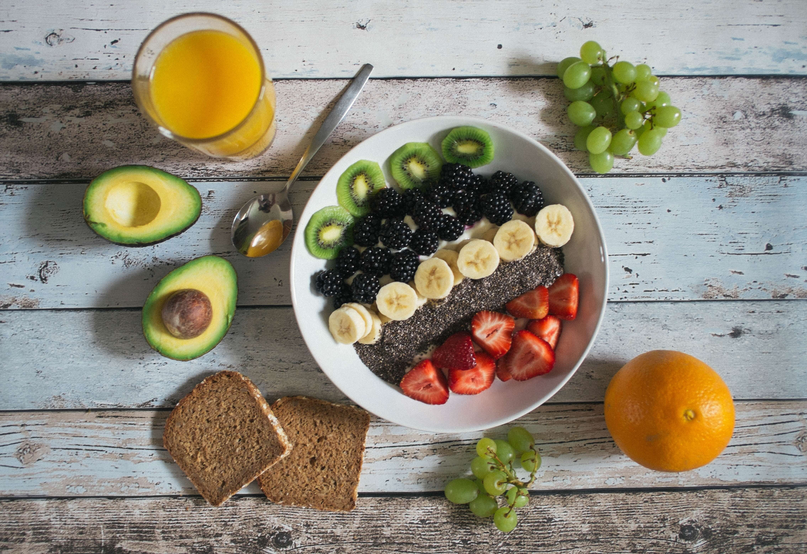

Healthy Life For better life
Some things that you can do to stay healty during pandemic
Eat Healthy Food

A healthy diet rich in fruits, vegetables, whole grains and low-fat dairy can help to reduce your risk of heart disease by maintaining blood pressure and cholesterol levels. High blood pressure and cholesterol can be a symptom of too much salt and saturated fats in your diet.
Stay active
Staying active can be as simple as taking a short walk around your backyard, gardening, cleaning your home environment, knitting and cooking. Keep your body flexible by stretching first thing in the morning when you wake up. Having a daily routine is important to keep you stay active, strong and healthy during self-isolation.
KEEP YOURSELF ENTERTAINED
Keeping yourself busy and entertained during COVID-19 is very important. Listening to music, watching your favourite shows on Netflix, playing online puzzles, playing some games,subscribing to YouTube tutorials and learning a new skill are some ideas you can try,so don't be stressfull.
Keep Connected
Take this time to re-connect with your friends and families during self-isolation. You can learn how to use new technology to keep in touch with your loved ones. Apps like Zoom or Skype allow you to virtually call and connect with others anytime of the day. If you’re active on Facebook, use Messenger to chat or play games with your friends. Take the time to write a good old-fashioned letter to your best friend that you haven’t connected in years.
Stay informed with the right information
During uncertain times like these, information overload could happen, resulting in stress and anxiety. Staying informed and getting the right information from reliable sources is key. If you need more information about COVID-19, visit ACH Group’s COVID-19 Response Page to find out more.